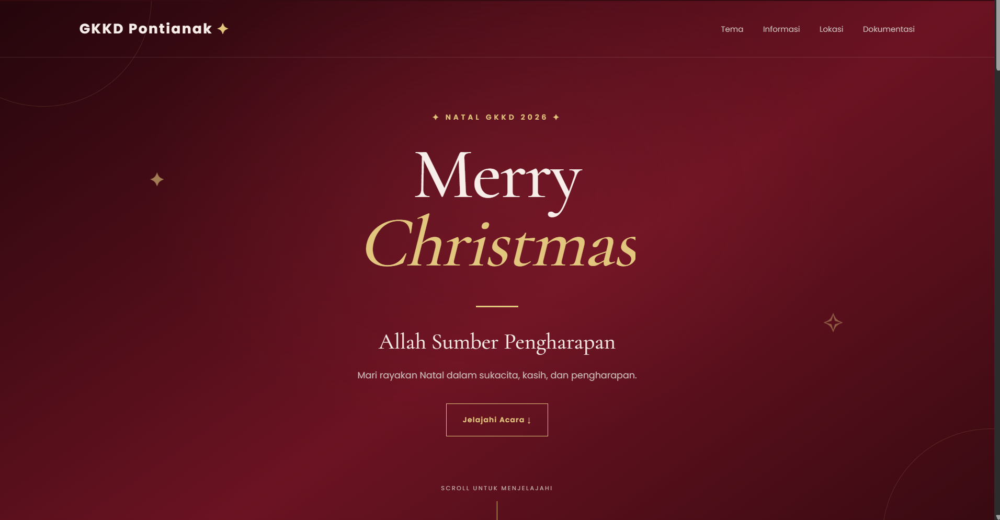

Website Natal GKKD 2026
BARUWebsite informasi perayaan Natal GKKD 2026 yang saya buat menggunakan HTML dan CSS dengan desain bernuansa merah dan emas.
Website Natal GKKD 2026 merupakan sebuah proyek yang dibuat untuk memberikan informasi lengkap mengenai kegiatan perayaan Natal. Melalui website ini, pengunjung dapat mengetahui berbagai informasi acara dengan tampilan yang lebih menarik, praktis, dan mudah dipahami.
Dalam proses desainnya, website ini menggunakan perpaduan warna merah tua dan emas untuk menciptakan suasana Natal yang hangat dan elegan. Setiap bagian disusun dengan memperhatikan pemilihan warna, ukuran tulisan, jarak, serta tata letak agar seluruh informasi dapat ditampilkan dengan rapi.
Pada bagian pembuka, website menampilkan judul NATAL GKKD 2026 dan ucapan Merry Christmas sebagai identitas utama acara. Bagian ini juga dilengkapi dengan tampilan visual dan animasi untuk memberikan kesan menarik ketika pengunjung pertama kali membuka website.
Website ini memiliki bagian tema Natal yang menampilkan tema utama perayaan beserta ayat Alkitab yang berkaitan dengan pesan pengharapan. Bagian tersebut dibuat untuk menyampaikan makna Natal sekaligus mengingatkan pengunjung tentang pesan yang ingin dibagikan melalui perayaan ini.
Selain tema, terdapat bagian informasi acara yang berisi jadwal, waktu, dan lokasi pelaksanaan Natal. Informasi tersebut disusun secara teratur agar pengunjung dapat menemukan detail acara dengan mudah tanpa harus mencari melalui banyak halaman.
Dalam pembuatan proyek ini, saya menggunakan HTML untuk membangun struktur website dan CSS untuk mengatur tampilan, warna, tata letak, serta berbagai efek animasi. Melalui proyek ini, saya dapat mempraktikkan materi pemrograman web yang telah dipelajari sekaligus mengembangkan kemampuan dalam membuat website yang lebih menarik dan informatif.